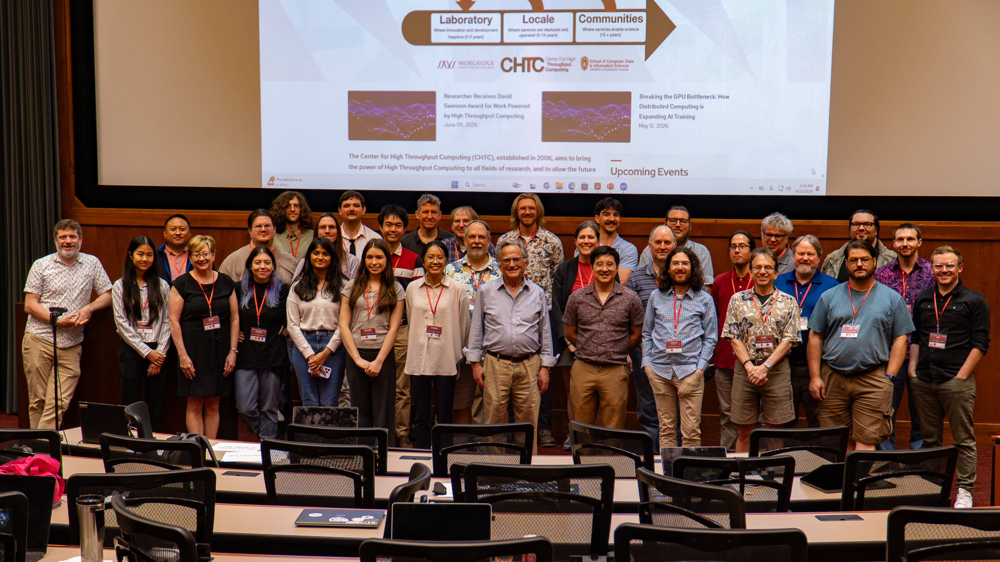
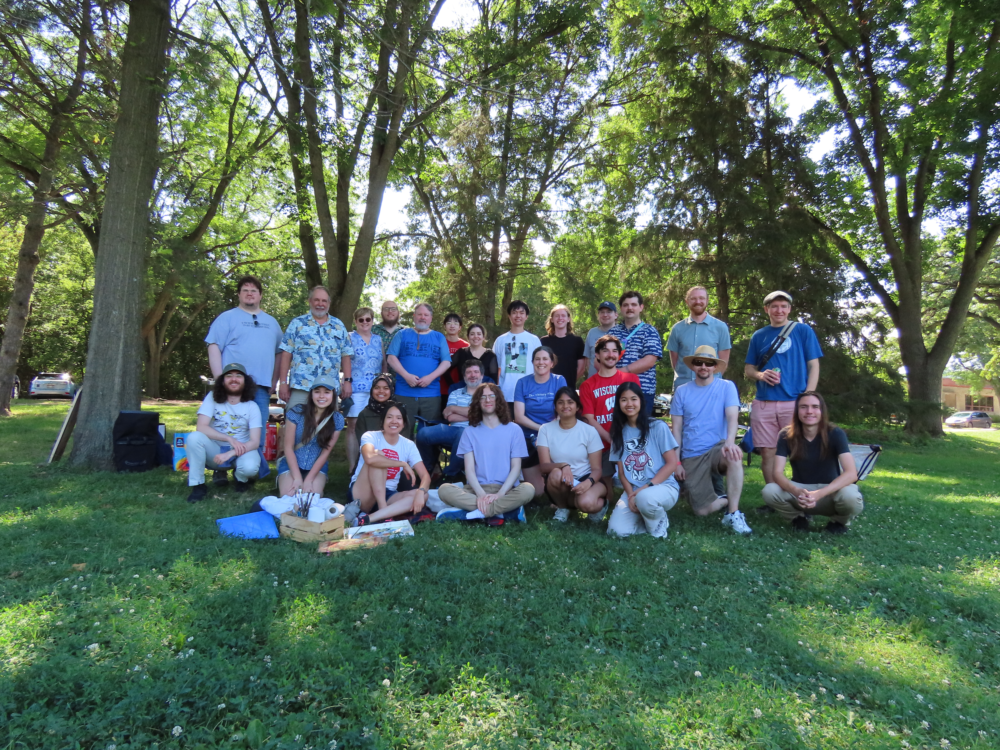
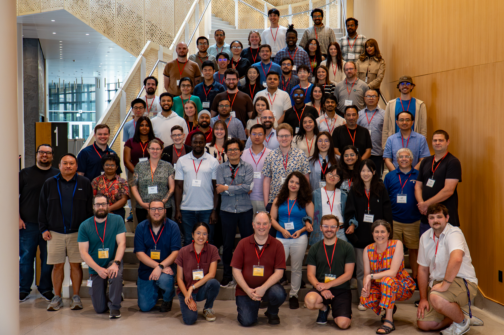

Fellow
Worked on research computing documentation, usability, technical graphics, interactive learning materials, and video tutorials. I focused on helping users navigate complex computing concepts with clearer explanations and more visual guidance.
–


